Track habits in Markdown.
Visualize in vibrant heatmaps.
Bring habit data together from companion health apps, automated REST APIs, and everyday manual logging. Stored transparently in plain Markdown inside your Obsidian vault.
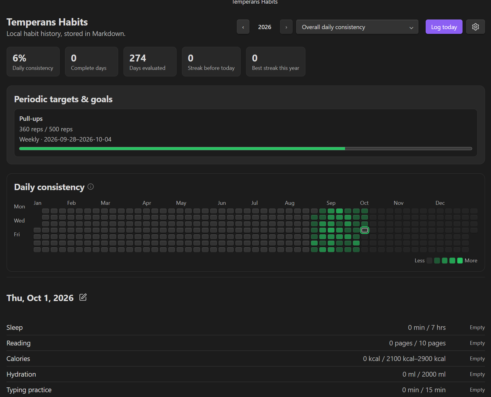
Built around your vault, not our cloud.
Everything stays in your hands: plain YAML frontmatter, atomic file updates, and zero telemetry.
100% Markdown Storage
Habits live in Habit Logs/YYYY-MM-DD.md. Transparent, future-proof, and fully indexable by Dataview.
53-Week Annual Heatmap
Continuous 4-shade progress gradients. See exact goal completion percentages across the entire calendar year.
Data Ownership Guard
Manual journal entries are protected by a strict ownership policy. API syncs and companion imports never overwrite your manual notes.
Three Habit Archetypes
Not all habits are simple checkboxes. Temperans natively supports build goals, avoidance routines, and goal-free variable tracking.
-
✓Build Habits (Positive Targets)
Reach daily or periodic milestones (e.g. Read 15 pages, 30 min exercise). Streaks increment when hitting 100% of your target.
-
✓Avoidance Habits (Negative Habits)
Quit or minimize slips (e.g. Fast Food, Smoking, Social Media). Clean days (0 slips) build streaks; values above tolerance register slips.
-
✓Zero-Goal Metric Trackers
Record numerical variables (Weight, Mood, Blood Pressure, Net Worth). Missing a day never penalizes streaks or completion rates.
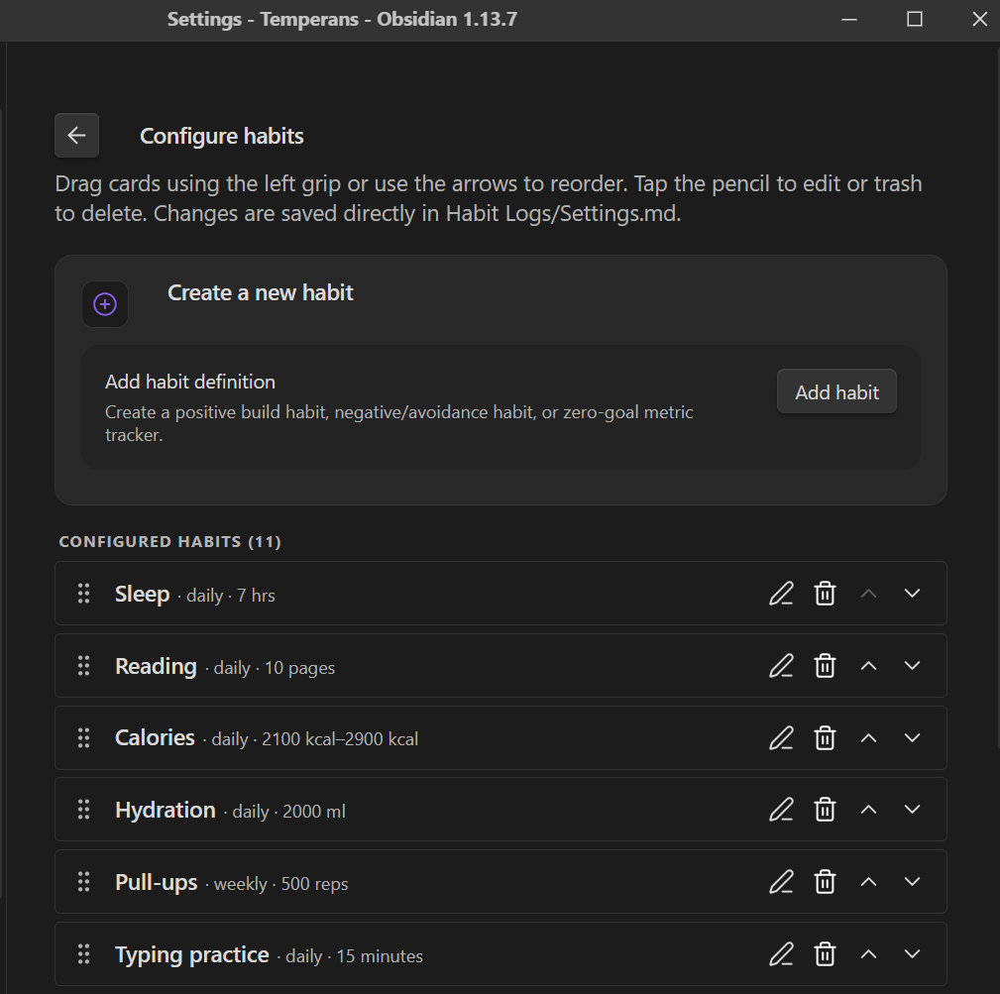
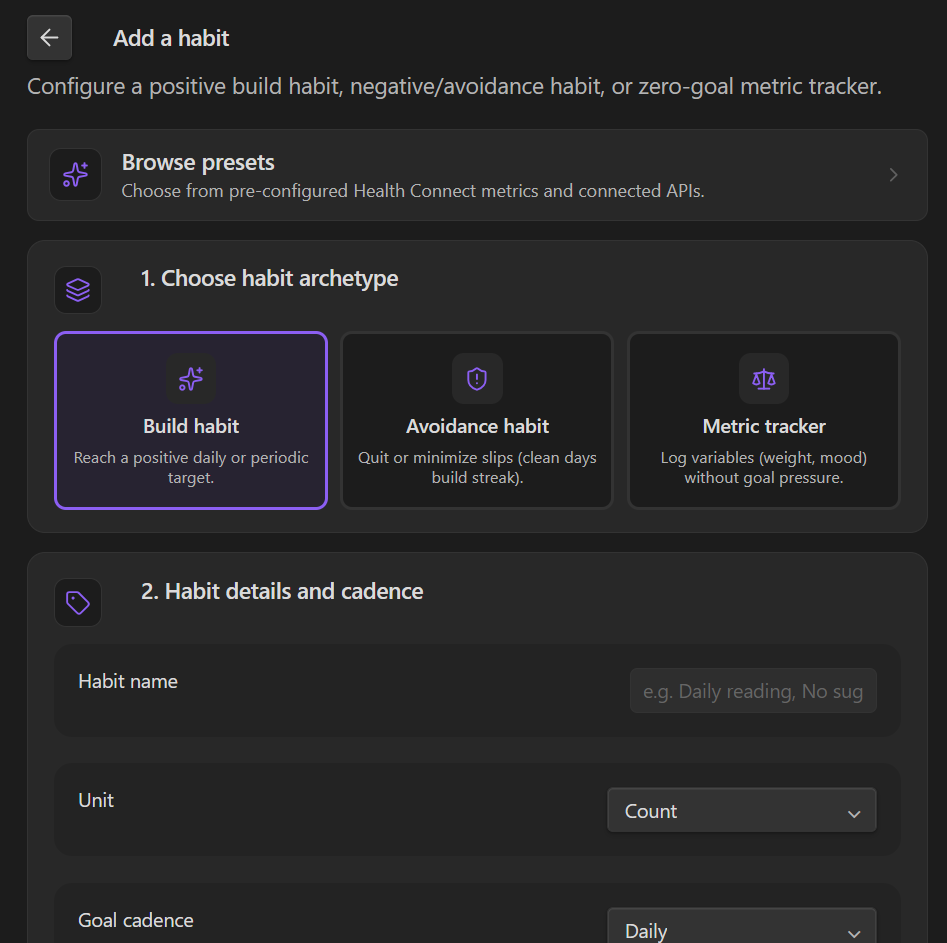
Preset Templates Catalog
New vaults start with 1 clean starter (Reading). Access one-click presets for Health Connect metrics and connected APIs whenever you need them.
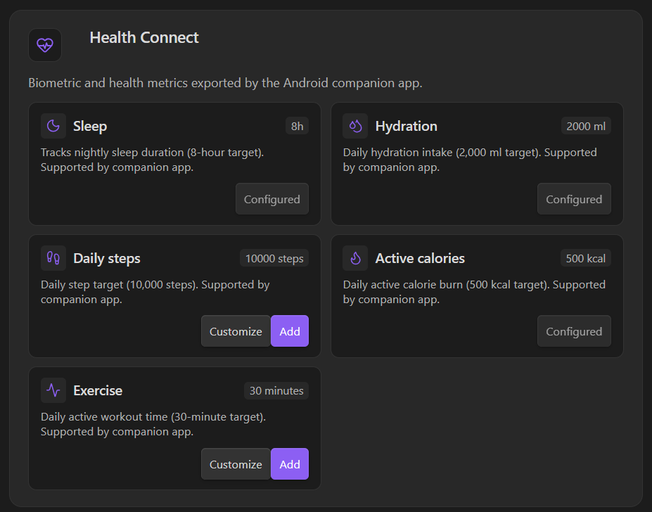
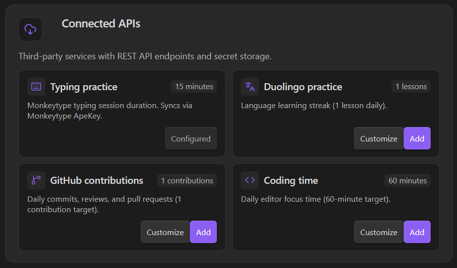
Smart Logging & Time Durations
Log amounts using numbers or intuitive duration formats like 1h 30m, 90m, or 1:30. Record multi-entry sessions with custom activity titles and notes.
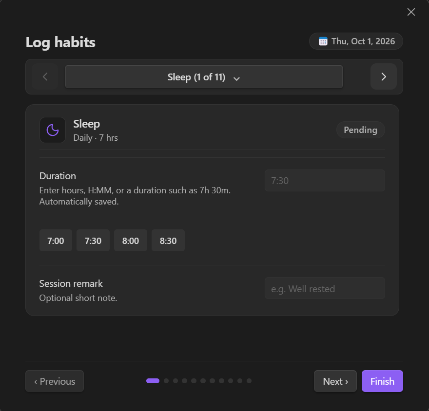
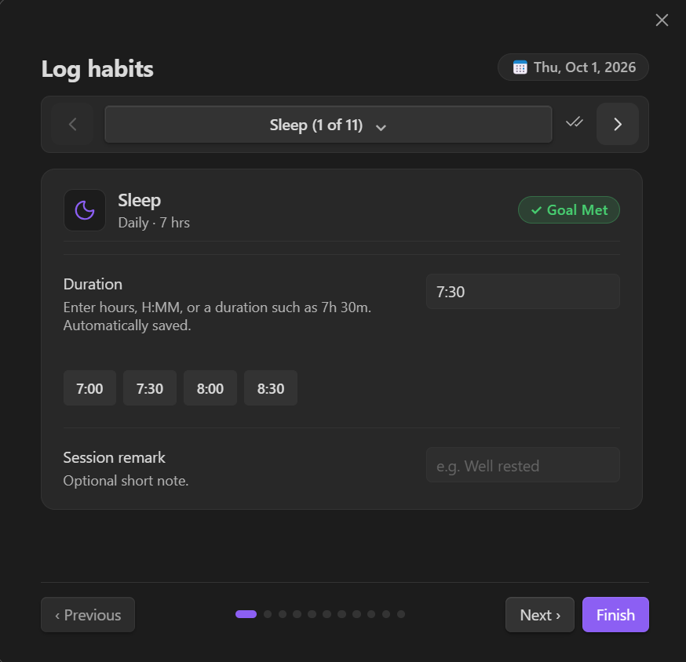
Annual Heat Map & Inspection
Hover over any day to inspect recorded totals and multi-entry notes. Filter by any single habit to focus your progress.
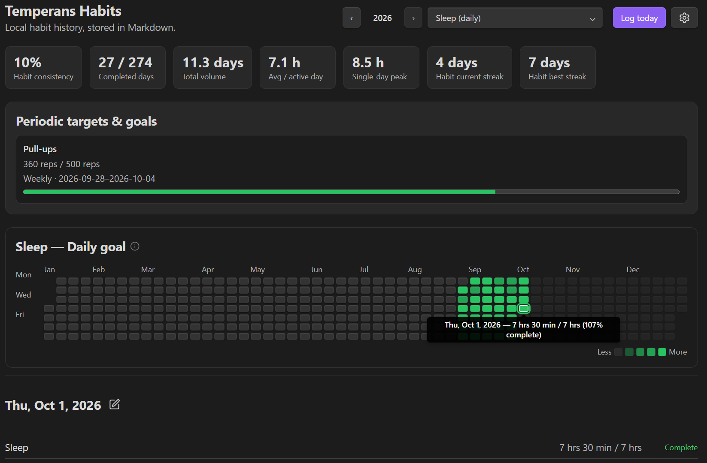
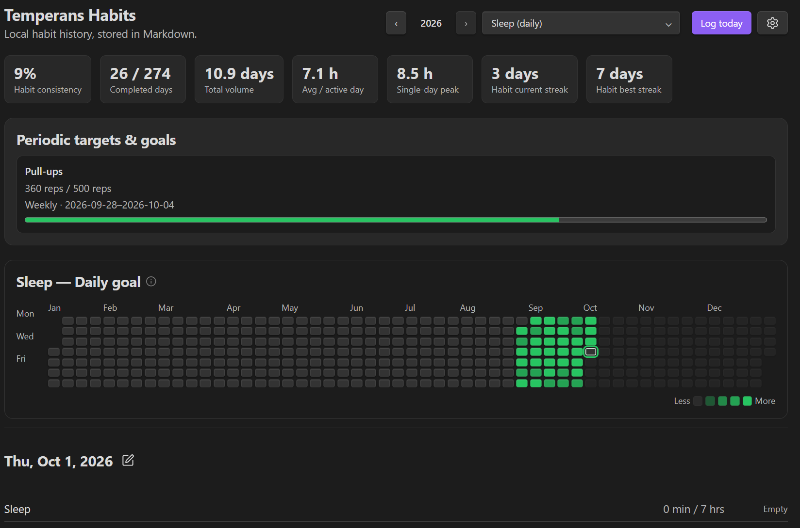
Reactive Markdown Codeblocks
Embed live habit heatmaps and summary cards directly into your daily notes, dashboards, or project canvases using ```temperans-dashboard.
```temperans-dashboard
habit: reading
year: 2026
widgets:
- stats
- calendar
- day-detail
```Comprehensive Analytics Engine
Automatically computes consistency rates, active day averages, streaks, and single-day peaks across all configured tasks.
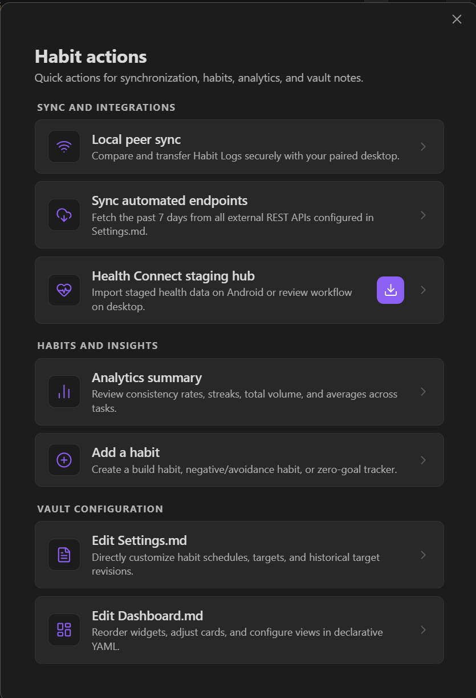
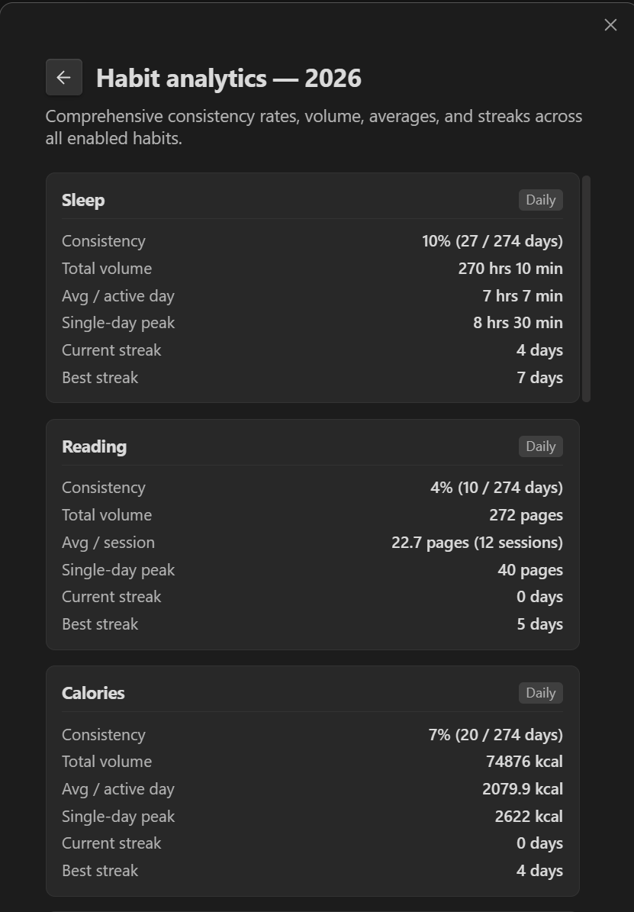
Automated REST API Endpoints
Connect external services (Monkeytype, WakaTime, Duolingo, GitHub) declaratively. Secret keys stay in Obsidian Secret Storage, never in plain Markdown.
- id: typing
name: Typing practice
unit: minutes
cadence: daily
enabled: true
targetHistory:
- effectiveDate: 2026-01-01
min: 15
endpoint:
sourceName: "monkeytype"
url: "https://api.monkeytype.com/results?onOrAfterTimestamp={{startMillis}}&limit=1000"
testUrl: "https://api.monkeytype.com/users/currentTestActivity"
auth:
type: header
headerName: Authorization
secretKey: "temperans-habits-monkeytype-apekey"
prefix: "ApeKey "
response:
recordsPath: "data"
dateField: "timestamp"
valueField: "testDuration"
aggregation: sum
valueTransform: "divideBy:60"Companion App & Peer Sync
Read Health Connect metrics on Android via an open companion app, and sync notes securely to desktop with zero cloud intermediaries.
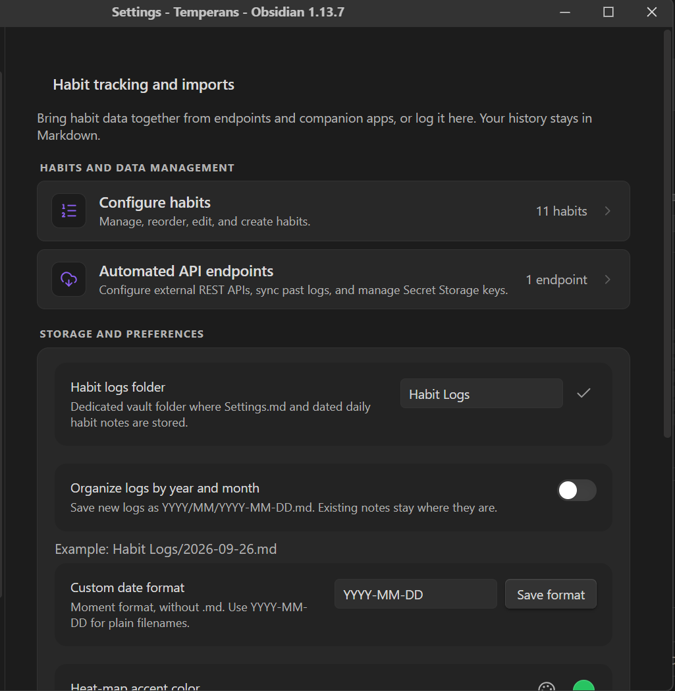
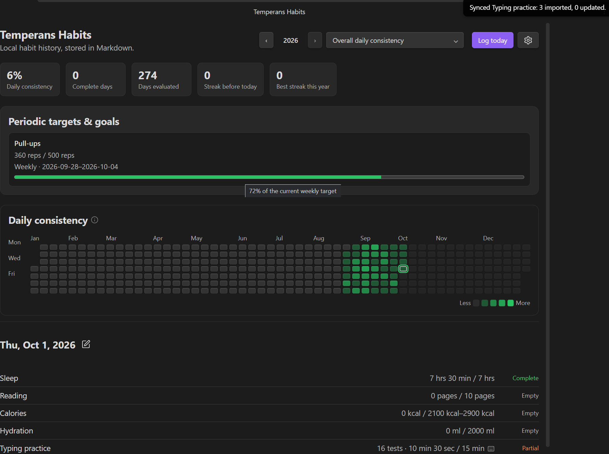
Clean Daily Markdown Format
Each day is a standalone Markdown note with clean, human-readable YAML frontmatter.
---
temperans: habit-log
temperans_schema: 3
date: 2026-08-22
calories: { value: 2200, source: health-connect }
guitar: { value: 30, source: manual, note: "Learned fingerstyle song" }
typing:
value: 900
value_unit: seconds
tests: 15
source: monkeytype
imported: []
reading:
sessions:
- title: "Atomic Habits"
pages: 25
note: "Chapter 3"
---
Optional personal daily journal notes written in standard Markdown below frontmatter...Installation
Install Temperans Habits directly inside Obsidian or install manually from release assets.
-
1Via Obsidian Community Plugins (Recommended)
Open Settings → Community plugins → Browse, search for
Temperans Habits, and click Install & Enable. -
2Manual Installation
Download
main.js,manifest.json, andstyles.cssfrom the latest GitHub Release into<vault>/.obsidian/plugins/temperans-habits/.